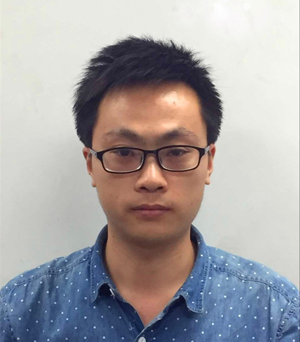

基本信息
| 学校：北京邮电大学 | 学历：硕士在读 |  |
| 专业：计算机科学与技术 | 年级：研三 | |
| 毕业时间：2017.03 |
教育背景
| 硕士 | 北京邮电大学 | 计算机学院 | 计算机科学与技术专业 | 2014.9-2017.03 |
| 本科 | 青岛科技大学 | 计算机学院 | 计算机科学与技术专业(双专业) | 2009.9-2013.07 |
| 本科 | 青岛科技大学 | 数理学院 | 应用物理 | 2009.9-2013.07 |
专业技能
热爱HTML、CSS及JavaScript等Web前端技术
熟悉Ajax技术，熟悉JQuery,AngularJs,Bootstrap;了解Handlebars,Smarty等模板引擎
了解Python，熟悉Django框架
熟悉Git的基本操作，熟悉Grunt等工具的使用
熟悉Linux系统的基本操作，有后台服务器端开发经验
熟悉常用的数据结构与算法，对OS和常用网络协议有一定了解
掌握MySQL、SQL Sever等常用数据库软件的基本操作与使用
实习经历
2016.06 – 至今 百度时代网络技术(北京)有限公司
负责前端模板的开发
项目经历
2015.07 – 2016.04 华为opdaylight/nemo开源项目
负责nemo界面的设计、开发和测试
该项目主要分三个阶段：
1.菜单栏的设计，包括添加、修改、删除node、connection、flow等信息以及相关图的显示，并向restful发送数据。
2.向restful发请求，接收数据，解析显示拓扑图、表格等。(IETF会议展示)
3.nemo的界面转为onos风格。(IETF会议展示)
2015.04 – 2015.07 华为openstack/congress开源项目
负责mysql数据库部分的增删改查
使用sqlalchemyORM框架建立mysql的数据表PolicyUI，并实现查询、增加、删除、修改
使用oslo.config来读取配置项的值。
使用ajax获取数据库的数据并解析，在界面显示。
2014.10-2015.04 华为gears开源项目
负责netconf的调研以及代码修改、yang语言的编写
查看yang的rfc文档，定义netconf中需要自己传输数据的yang格式
修改yuma的部分源码，使其可以发送和接收指定的消息
撰写部分相关文档说明
所获奖励
2014-2016 连续两次研究生一等奖学金
2009-2013 五次三等奖学金，多次被评为优秀三好学生和优秀团员
附：
nemo开源项目：https://github.com/opendaylight/nemo/graphs/contributors (用户名：swsiyu)
简历下载：北京邮电大学-刘通-web前端.pdf
简历下载：北京邮电大学-刘通-web前端.doc